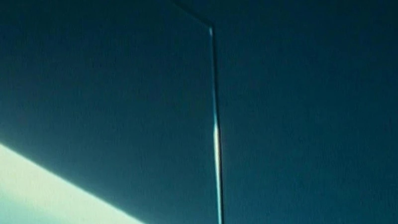

Mansfield K. / Un vent léger dans le feuillage / Study for Three Streams / bleared eyes of blue glass / tendril and spray / Wasserspiel I / Ausblicke I + II / Klinik (1988 / 1994 / 2024 / 2023 / 2023 / 1997 / 1990 / 2001)
Martine Rousset / Martine Rousset / Park Kyujae / Park Kyujae / Park Kyujae / Milena Gierke / Milena Gierke / Milena Gierke · 20m / 3m / 5m / 9m / 2m / 3m / 3m / 6m · 16mm / 16mm / 16mm / rest digital
A collection of films from French filmmaker Martine Rousset, Korean filmmaker Park Kyujae, and German filmmaker Milena Gierke, concerning images, text, light, water, sky, land, self, and intimate perception.